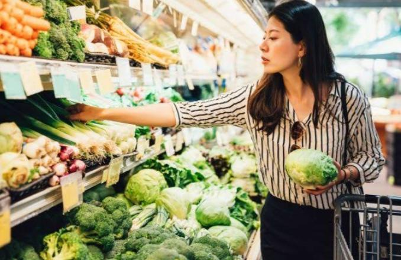

Grocery

GO BACK TO PREVIOUS MENU
Generally, most grocery stores will carry canned items, fish, dairy products, fresh and prepared meats, poultry, baked products, dry and frozen foods (eg. fresh fruits and vegetables) and snacks.